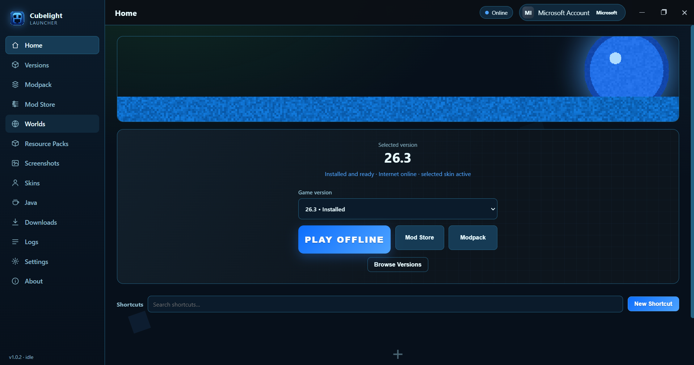

Releases / v1.0.2
Cubelight Launcher v1.0.2
v1.0.2
Asset
CubelightSetup-1.0.2.exe
Size
≈ 75 MB
Installer
NSIS · per-user
Platform
Windows 10/11
The original
- Full offline support with Local Profiles — play without ever touching your Microsoft account.
- Microsoft / Xbox Sign-In — sign in with Xbox / Microsoft for accounts that own the game.
- Built-in mod browser — CurseForge & Modrinth, searchable from inside the launcher.
- Automated dependency handler — Cloth Config, YACL and friends get installed automatically with the mod that needs them.
- Custom game directory isolation — a separate game directory keeps your worlds and mods safe from cross-contamination.
Upgrading
Install any newer setup (e.g. v1.2.1) over it — settings, accounts and modpacks carry over. You can also get there automatically: Settings → About → Updates, after pointing the updater at a feed (see the project README).
Screenshots
